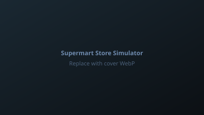

Port and rescue of a PC-oriented supermarket simulator into a shippable Android (and later iOS) product: repairing a broken project, replacing unsuitable plugins, rebuilding content for mobile budgets, and delivering touch controls, tutorials, and performance work for a broad API 24+ device target.
Update misuse with lighter, custom update groups where appropriate